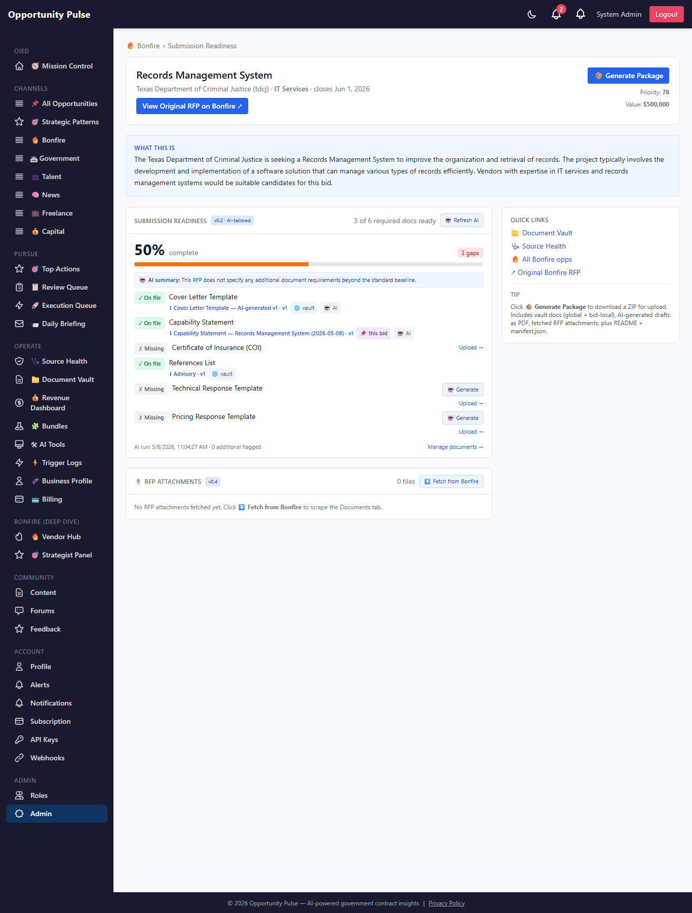

Submission Readiness v0.7 (Phase 5 polish)
Dedicated readiness page + vault doc expiry alerts · Walkthrough · 2026-05-08 · commit 81aca1b
Two operationalization upgrades to round out the engine:
-
Dedicated submission-readiness page at
/admin/bonfire/:id/submission-readiness— a linkable full-width view per opportunity. More breathing room than the inline drawer; canonical surface for "what's left before I hit Submit?" - Vault doc expiry alerts wired into the daily Source Health Agent email. COI expired? 8(a) cert expiring in 12 days? It now shows up red/amber in the same email that already reports source health — instead of failing silently the morning of submission.
No new schema, no new cron — both features piggyback on infrastructure already shipped (the readiness panel from v0.1, the agent email from v9.10). Operational glue, not a new system.
What changed at a glance
| Surface | Before v0.7 | After v0.7 |
|---|---|---|
| Where readiness lives | Inside the right-side drawer on the Bonfire list. Cramped, can't be linked, scrolls inside a 36rem panel. | Dedicated full-width page. Linkable URL. Two-column layout with quick-links sidebar. |
| How to reach the page | Open list → click row → drawer opens → scroll down → readiness panel. | From the drawer: 📑 Open full readiness page button. Or paste the URL directly. |
| Vault doc expiry visibility | Only visible if you happened to open the vault page and scan the badges. | Surfaced in the daily Source Health email — same morning email that already covers data feeds. |
| Email gating | Source Health email triggered by failing/zero-yield sources only. | Also triggers when any vault doc is expired or expiring within 30d. |
1 · Dedicated submission-readiness page
Live screenshot of /admin/bonfire/<id>/submission-readiness for the
"Records Management System" opportunity (Texas Department of Criminal Justice, $250,000, closes Aug 1 2026):

What's on the page
- Header card — opp title, agency, close date, "View Original RFP on Bonfire" CTA, Priority + Value badges, and the headline 📦 Generate Package button (carried over from v0.5).
- "What this is" blue panel — the AI-generated overview, same content as the drawer.
- Submission Readiness card — full v0.1+v0.3 panel: 50% complete (3 of 6 required docs found), per-row status with click-to-download for on-file docs, 🤖 Generate buttons for AI-generatable types still missing.
- RFP Attachments panel — v0.4 component embedded inline. "Fetch from Bonfire" CTA when none present yet.
- Quick Links sidebar (right column) — Document Vault, Source Health, all Bonfire opps, original RFP. Sticky, so it stays visible as you scroll the long checklist.
- Tip box — explains what's in the Generate Package ZIP (vault docs, AI drafts as PDF, fetched RFP attachments, README, manifest.json).
2 · Two-column layout — main work + persistent sidebar
Below the lg breakpoint (~1024px) it stacks; above it splits 2/3 + 1/3:
┌─── header card ──────────────────────────────────────────┐ │ Title / agency / close · [📦 Generate Package] │ │ [View Original RFP on Bonfire ↗] Priority: 7 │ └──────────────────────────────────────────────────────────┘ ┌── BonfireReadinessPanel ─────────────┐ ┌─ Quick Links ─┐ │ │ │ 📁 Vault │ │ 50% complete · 3 of 6 required │ │ 🩺 Source │ │ ✓ Cover Letter Template │ │ 🔥 All opps │ │ ✓ Capability Statement │ │ ↗ Original │ │ ✓ References List │ │ │ │ ✗ Certificate of Insurance │ │ Tip: │ │ ✗ Technical Response [🤖 Generate] │ │ Click 📦… │ │ ✗ Pricing Response [🤖 Generate] │ │ │ │ │ │ (sticky as │ ├── BonfireAttachmentsPanel ───────────┤ │ you scroll) │ │ No RFP attachments fetched yet… │ │ │ │ [Fetch from Bonfire] │ │ │ └───────────────────────────────────────┘ └───────────────┘
- The sidebar uses
sticky top-4so quick-links remain in view during a long scroll through the readiness checklist. - The header's 📦 Generate Package button is the same handler as the drawer — clicking either streams the same ZIP.
- Page-level error banner sits inline under the header so download/package failures show in context.
3 · How you get to the page
Two paths, neither destructive:
-
From the drawer — when you click any row on the
/bonfirelist, the existing right-side drawer now contains a small grey button beside the original-RFP CTA: 📑 Open full readiness page. Admin only. Opens in the same tab; the drawer closes naturally on navigation. -
Direct URL — paste
/admin/bonfire/<opportunity-id>/submission-readiness. Useful for emailing teammates a link to a specific bid's status, or linking from a Slack message.
The route is admin-gated server-side and client-side. Non-admins get an "Admin access required." notice instead of the page contents. Same gating story as v0.1 vault.
4 · Vault doc expiry alerts in the daily email
The Source Health Auto-Triage Agent (shipped v9.10) already runs daily after ingest, retries failing sources, classifies remaining failures, and emails the operator only when there's something worth reading. v0.7 extends what counts as "worth reading" to include vault doc expiries:
- 🚨 Expired (red) — any vault doc whose
expires_atis in the past. Listed first; sorted most-expired first. - ⏳ Expiring soon (amber) — within 30 days. Sorted closest-to-expiry first.
- Nothing else — if no docs in either bucket and no source issues, no email. Clean days stay quiet.
The agent loads from documentService.listDocuments({ expiringWithinDays: 30 }), splits by
days < 0, and decorates each item with type_label from
documentTypes.labelFor() for human-readable subject lines (e.g. Certificate of Insurance (COI)
instead of coi).
5 · Email — HTML version
What the operator sees in their inbox on a day with one expired and one expiring-soon doc:
Daily Source Health Auto-Triage report:
✅ Auto-recovered after retry (1)
- jobicy
🚨 Expired vault documents (1)
-
Certificate of Insurance (COI) — COI 2025
(v1, global)
Expired 5 days ago. Renew + upload a new version.
⏳ Vault documents expiring soon (1)
-
8(a) Certification — 8(a) Cert
(v2, global)
Expires in 12 days. Schedule renewal now.
Color coding
- Red
#dc2626— already-expired. Action is mandatory before next submission. - Amber
#92400e— expiring within 30d. Action is "schedule renewal," not "block." - Grey — version + scope qualifier (e.g. v2, global) so you can find the exact row in the vault.
6 · Email — plain text version
For text-only mail clients and Slack-paste, the same content renders as:
Daily Source Health Auto-Triage report: Auto-recovered after retry: - jobicy EXPIRED vault docs: - Certificate of Insurance (COI) "COI 2025" — expired 5d ago Vault docs expiring within 30 days: - 8(a) Certification "8(a) Cert" — expires in 12d Page: http://95.216.199.47/admin/data-sources
Same data, no styling. Tested directly via emailReport() with shaped fixtures — see tests/admin/sourceHealthAgent.test.js.
7 · Email gating logic
The agent only sends if at least one of these is true:
| Condition | Source |
|---|---|
| ≥1 source still failing after retry | v9.10 |
| ≥1 zero-yield source needing manual review | v9.10 |
| ≥1 source auto-recovered (success deserves a mention) | v9.10 |
| ≥1 vault doc already expired | v0.7 |
| ≥1 vault doc expiring within 30 days | v0.7 |
Otherwise should_email = false and the agent returns silently. Clean days do not page you.
See sourceHealthAgent.test.js > "keeps should_email=false when nothing is expired/expiring + nothing else changed".
Important non-behaviors
- The agent never auto-deletes an expired doc. Expiry is informational; you might still need the file as a historical reference.
- The agent never auto-renews certifications. Renewal is a human + counterparty workflow (insurance broker, SBA, etc.).
- The agent never blocks submissions. A bid with an expired COI still generates a package; the package's
manifest.jsonrecords what was included verbatim.
Files changed
| Path | Why |
|---|---|
frontend/src/pages/BonfireSubmissionReadinessPage.jsx | NEW · dedicated /admin/bonfire/:id/submission-readiness page (header + two-column layout + quick-links sidebar) |
frontend/src/App.jsx | Wire the new route under the admin tree |
frontend/src/components/bonfire/BonfireDetailPanel.jsx | Add 📑 Open full readiness page link beside the "View Original RFP on Bonfire" CTA |
backend/src/admin/sourceHealthAgent.service.js | + loadExpiringDocs(); merge into report; should_email includes expiries; HTML + text sections; type-labels via documentTypes.labelFor() |
backend/tests/admin/sourceHealthAgent.test.js | +4 tests (expired flagged, expiring-soon flagged separately, gating stays false on clean day, email body includes both sections) |
backend/scripts/capture-submission-readiness-v07-walkthrough.js | NEW · Playwright capture for the screenshot above |
docs/submission-readiness-v07-walkthrough.html | This file |
docs/submission-readiness-v07-walkthrough-assets/01-dedicated-readiness-page.png | Screenshot |
PROGRESS.md | v0.7 entry under Submission Readiness Engine |
Backend test suite: 115 suites / 1409 tests pass. No migrations, no new dependencies.
Final notes
Engine state: with v0.7 shipped, the master plan's Phase 5 is fully operationalized. Recap of what's live end-to-end on Bonfire:
- v0.1 — Document Vault (30 types, expiry-aware, scope = global | bid)
- v0.2 — AI requirement tailoring per opportunity
- v0.3 — AI-generated docs, dual-write to bid + global with shared lineage
- v0.4 — RFP attachment locker (Bonfire detail-page scrape, Cloudflare-aware)
- v0.5 — One-click submission package ZIP (vault docs + AI drafts as PDF + RFP attachments + README + manifest)
- v0.6 — Auto-fill from vault excerpts in proposal/offer/resume generation, with audit trail
- v0.7 — Dedicated readiness page + vault expiry alerts in daily email
What's left from the original master plan:
- SAM.gov + grants.gov per-opportunity attachment fetchers (~14h). Same shape as the v0.4 Bonfire fetcher, but the platform-specific scrapers don't exist yet — SAM.gov has a paid API tier with attachment URLs and a free tier that requires HTML scraping; grants.gov has a public synopsis API.
Anything not captured anywhere above: